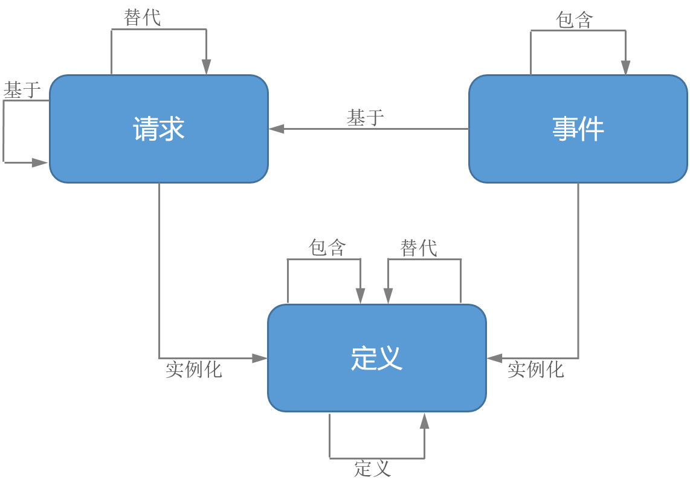

FHIR R4

 Workflow
WorkflowFHIR Infrastructure  Work Group Work Group |
Maturity Level: 2 | Standards Status: Trial Use |
工作流是卫生健康领域的一个重要组成部分——医嘱、健康管理方案、转诊是医院住院场景和社区卫生的主要活动，这些活动驱动着工作流。 当需要共享有关工作流状态或关联关系时，当需要协调或驱动跨系统工作流的执行时，以及当需要定义操作授权、依赖关系统和工作前提时，都涉到FHIR的及工作流。
工作流状态与关联关系
FHIR不需要用于工作流的执行。 医嘱、护理计划、实验室结果、住院、索赔和其他记录都可以通过FHIR资源直接实现数据共享，而无需通过FHIR交易来执行医嘱或索赔。 对工作流执行的互操作支持是一种更高级的FHIR活动，因为它对标准化的程度要求更高。 可互操作的工作流执行不仅需要将交换数据标准化，还需要将跨系统的流程、角色和活动标准化。 然而，即便不使用FHIR来执行工作流，仍然需要将与工作流相关的数据元素标准化： 事件或结果如何关联其开立医嘱？父步骤和子步骤如何链接在一起？护理计划如何确定它遵循的是哪个方案？
FHIR定义了参与活动的三类资源——请求、事件和定义。 每个类别都有一个与之相关联的“模式”。属于同一类别的资源者鼓励遵守各自的模式。这些模式为每个类别的大多数资源提供了典型的标准元素。 由于工作组并希望典型的领域行为脱离实际的需求，这些需求比“期望的”架构模式更具权威性，所以并不要求严格的遵守这些模式。 在某些情况下，可能不用核心元素而用扩展来实现功能，在这种情况下，给定资源的模式功能被视为“不常用，但仍然相关”。
模式及其相互关系将在本页的 工作流资源模式章节详细介绍。
工作流执行
除了为工作流过程中使用的资源定义模式外，FHIR还支持这些过程的执行。但FHIR并没有为工作流架构定义“一刀切”的解决方案。 FHIR支持各种互操作性范式，其中大多数（REST、消息传递和 服务）都能驱动工作流执行。（文档 Document范式可以与其他模式结合使用，但不直接驱动工作流执行。） 此外，根据工作流过程的场景和需求，其中一些范式允许多种方法来支持工作流。
工作流执行和通信模式部分描述了工作流执行的许多选项，总结了它们各自的优缺点，并给出了建议的最佳使用场景。
工作流定义
医疗方案、医嘱组集、指南和其他结构（包括对应发生的活动类型、应发生的顺序、相关依赖性、在什么情况下应开始或结束等的定义）的定义由一对资源来实现：
这对资源的使用将在此处讨论。
并不是FHIR中的所有资源都与工作流相关——许多资源用于描述实体和角色（患者、药物等）或基础框架（结构定义、值集等）。 然而，大部分的FHIR资源都以某种方式用于对活动的描述，这些资源几乎都参与到工作流领域中——它们描述了可以完成（定义）、需要完成（请求）或已经完成（事件）的事情。 下表汇总了与工作流相关的资源：
| Definitions | Resources that define something that can potentially happen in a patient and time-independent manner | ||
|---|---|---|---|
| Requests | Resources that ask for or express a desire/intention for something to be done | ||
| Events | Resources that express that something has been done and which can potentially be done because of a request | ||
| * | The Appointment and AppointmentResponse resources do not follow the same sort of request/response pattern as the other resources. Their design is based on iCal conventions, so their model won't align with the pattern as strictly as most other resources. They are included here for completeness. |
| ‡ | The Task resource takes on characteristics of both "requests" and "events" and thus shares characteristics from both patterns |
Note that requests, events and definitions don't exist in a 1:1:1 relationship. Some requests and events have obvious pairings. For example, a SupplyRequest will generally always pair with a SupplyDelivery. The same goes for EnrollmentRequest/EnrollmentResponse, etc. On the other hand, for other resources there isn't a strict pairing. A ServiceRequest might be responded to by an Encounter, DiagnosticReport, Procedure, RiskAssessment, etc. Similarly, a Procedure might be triggered by a ServiceRequest. The set of common linkages should be asserted in their respective resources. The specific types of responses for a given request will be governed by the Request.code, any workflow definitions/protocols referenced and local convention.
These three patterns of resources have a standard set of relationships, both with themselves, as well as with each other.
Specifically:
This list of relationships is not exhaustive, but covers those that are "standardized" as part of the patterns. Further description and guidance on these relationships can be found in the Request, Event and Definition logical patterns.
Requests are resources that represent the proposal, plan or order for an activity to occur. A Request pattern defines the common elements typically present on all request resources.
The amount of information needed for a Request to be actionable can vary by circumstance. Some request instances might not be "fully specified" - additional information from protocol, patient preference and/or professional decision-making may be necessary before the authorized action can occur. For example, a MedicationRequest might be specified without indicating a strength or route in situations where the pharmacy (or even nursing station) has the authority to determine those parameters. A VisionPrescription might not be actionable until frames have been chosen and the necessary measurements of the patient's face have been taken to allow the lenses to be positioned appropriately within the frames.
All requests with an intent of "order" authorize something. Whether what is authorized is sufficient to be immediately actionable depends on who is fulfilling the order and the context in which the fulfillment request is made. The determination of whether a given "request" is actionable may be made by the systems involved or the humans being asked to act.
As well, the existence of a "Request" instance doesn't necessarily imply that fulfillment will be requested immediately - or even ever. The decision to request fulfillment may be delegated to the patient or to down-stream practitioners. Such fulfilling practitioners may need to capture additional information prior to executing the fulfillment.
Events are resources that represent the ongoing or completed execution of some activity or observation. For example, a clinical procedure, a financial transaction, the recording of a diagnosis, etc. An Event pattern defines the common elements typically present on all event resources.
Definitions are resources that represent activities that could be performed in a time and subject-independent manner such as a protocol, order set, clinical guideline, etc. A Definition pattern defines the common elements typically present on all definition resources.
STU Notes:
- It is possible to replace some portions of the MessageHeader with a reference to the Task resource. Doing so would mean consistency in how asynchronous requests are represented using REST and messaging. However, it introduces an additional layer of complexity and formality into the messaging paradigm that may be unwelcome, particularly for those systems that do not currently foresee a need to support both RESTful and messaging invocations of workflow
- The OperationDefinition resource could be used to define types of tasks and the sets of parameters that can go with them. Is this an appropriate use of the OperationDefinition resource?
- The SupplyRequest, DeviceRequest and VisionPrescription resources have a significant degree of overlap. Should they remain distinct resources?
Feedback is welcome here
®© HL7.org 2011+. FHIR Release 4 (v4.0.0) generated on Thu, Dec 27, 2018. QA Page
Links: Search |
Version History |
Table of Contents |
Credits |
Compare to R3 |
 |
Propose a change
|
Propose a change